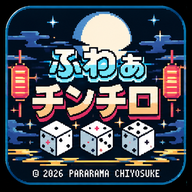
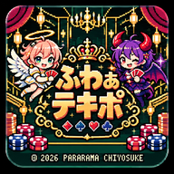

🎮 ゲーム別アイコン
Ver.0.28
好きなゲームをスマホのホーム画面から起動できます。アプリとして追加とショートカットの作り方を選べます。

チンチロのショートカット
- 「チンチロを開く」からChromeでゲームを表示
- Chrome右上「︙」→「ホーム画面に追加」
- 「ショートカットを作成」を選ぶ
Chromeで「アプリをインストール」しか出ない場合は、端末側の表示に従ってください。

テキポのショートカット
- 「テキポを開く」からChromeでゲームを表示
- Chrome右上「︙」→「ホーム画面に追加」
- 「ショートカットを作成」を選ぶ
Chromeで「アプリをインストール」しか出ない場合は、端末側の表示に従ってください。
GBA版のショートカット
- 「GBA版を開く」からChromeでゲームを表示
- Chrome右上「︙」→「ホーム画面に追加」
- 「ショートカットを作成」を選ぶ
Chromeで「アプリをインストール」しか出ない場合は、端末側の表示に従ってください。
※ アプリのインストール画面はChromeが対応時に表示します。ブラウザーやインストール状況により、手動操作が必要です。ゲームには通信接続が必要です。